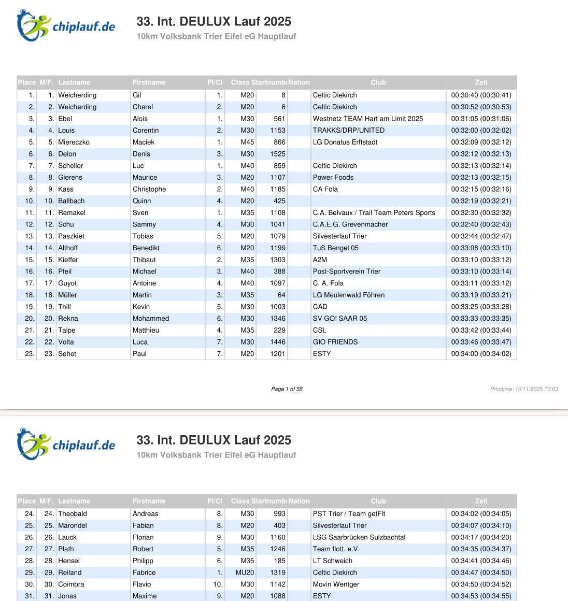
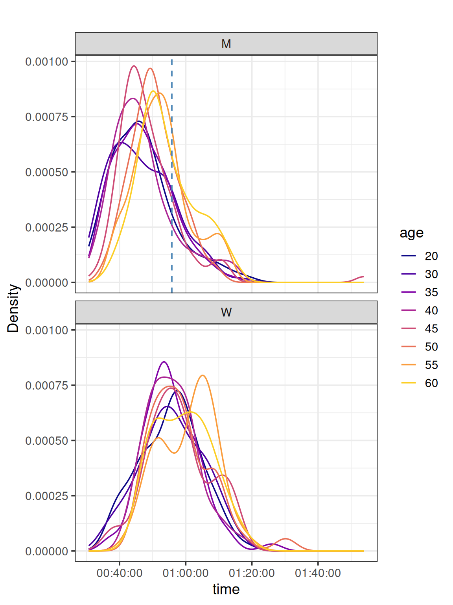

A German friend recently convinced me not only to start running but also to try a race.
He encouraged me to join the 10kDEULUX-Lauf which happens along the Sauer, half in Germany, half in Luxembourg, on November the 8th. This Race was the 33th organized in the small village of Langsur.
So far, not really any link to R. It comes.
One can check his/her official time on the website chiplauf.de. The web-interface works well for querying the full results, by name, club, number but if you want all data, the only option is a PDF file.
It looks like this, 58 pages of tables:

Result PDF
PDF scraping
I have never needed to so those things but it was in my radar. This was the occasion.
After a quick search, I ended up testing {tabulapdf} and this is excellent.
logo
See how you can the 58 pages tables in one tibble:
Most people aimed at 50 minutes, with a discrete but present shoulder for 40 minutes. Actually one pacer was participating for this time, showing the interest for this competitive time. After 80 minutes, most people crossed the the finnish line with a right-tail.
deulux |>filter(between(as.integer(age), 20, 60)) |>ggplot(aes(x = time, colour = age)) +geom_line(stat ="density") +geom_vline(data = \(x) filter(x, dossard ==725), aes(xintercept = time),color ="steelblue", linetype ="dashed") +# tweak the end to avoid the yellow we can't see muchscale_colour_viridis_d(end =0.9, option ="plasma") +facet_wrap(vars(sex), ncol =1) +labs(title ="",y ="Density") +theme_bw(14)

As expected, older people performed less than younger ones. But in details, 60+ men do better than 55+. Actually, we observe the same for women. For this category of 55+, the two sub-populations in men and women have opposite quantities. The faster 55+ women are a smaller group while most 55+ men are faster.
Belonging to a club
One could imagine that people running in a club are more trained. We can check this assumption for this race
Interesting plot! For women, being in a club increase the performance in this race, shifting the densities to faster time. For men, the shape changes, faster time are more frequent for people club but the mode remain globally the same.
We can compute the exact time shift, it requires some work with functional programming. Finding for which time values (in seconds) the density is the highest and convert it back to a time
time_modes |># remove the unnecessary columns with a predicateselect(!where(is.list)) |>pivot_wider(id_cols = sex,names_from = in_a_club,names_prefix ="club_",values_from = mode) |>mutate(time_shift = club_TRUE - club_FALSE)
# A tibble: 2 × 4
sex club_TRUE club_FALSE time_shift
<chr> <time> <time> <drtn>
1 M 46'40.850628" 46'39.968695" 0.8819329 secs
2 W 52'43.126791" 57'33.610502" -290.4837106 secs
Striking result, for men, not even a second difference. But for women, that is 290 seconds faster, more than 4 minutes!
Conclusion
The {tabulapdf} package does a great job! Reports the number of pages and can neatly extract each table to a tibble. Was fun to plot densities of this race, will be curious to plot more as I have no idea how representative this race was compare to others.